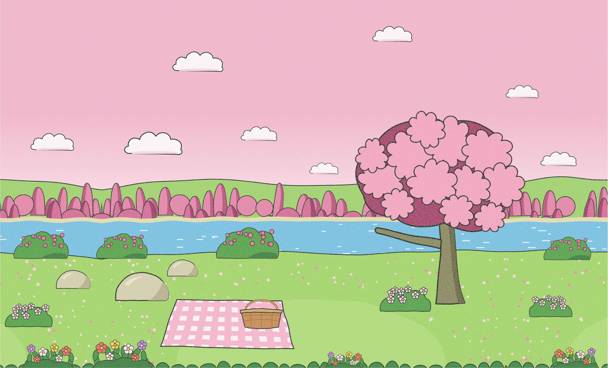
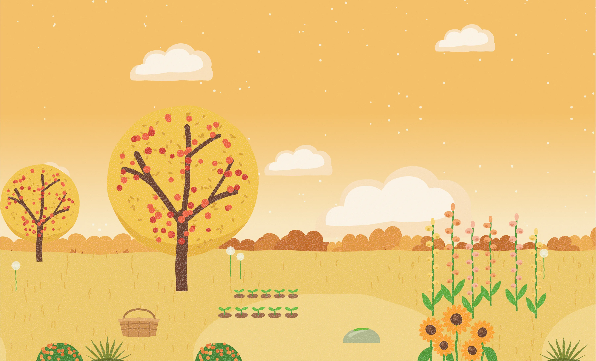

Toddlers aged approximately 1–3, playing with an accompanying adult.
Synopsis
Garden of Sounds is a browser-based musical toy designed for toddlers, presented as an interactive storybook featuring three illustrated garden environments. Children tap and drag familiar gardening tools, animals and fruits to explore sounds and create layered music. Tools provide percussion, animals provide melody and fruits provide ambient textures. Vertical position determines pitch and horizontal position controls rhythm. All objects follow a shared beat and chord progression, allowing different sounds to remain harmonised. Immediate audiovisual feedback, controlled musical variation and simple interactions encourage open-ended exploration, creativity and learning through play without requiring musical knowledge.
This page documents the finished project. Assignment 1 explains its purpose and values; Assignment 2 records the eight prototype investigations.
2. Response to the Design Scenario
Garden of Sounds introduces toddlers to musical exploration through an interactive storybook. Familiar gardening tools, animals and fruits replace abstract musical controls. Children tap an object to start or stop its sound and drag it to change pitch and rhythm. Immediate visual responses connect those gestures to their musical results.
Playfulness and Learning Through Discovery: controlled randomness creates new short phrases within recognisable object identities, shared chords and synchronised timing. Repeating, moving and combining objects reveals musical relationships through play.
Self-Expression and Creativity: children choose which objects play and where they sit. Percussion, melodies and slower ambient layers can be combined freely, so each arrangement shapes the composition without requiring musical theory.
Accessibility and Confidence: large illustrated targets, expanded invisible hit areas, musical-note indicators and an interactive guide reduce reliance on reading and precise gestures. Playing objects glow, move and release floating notes. There are no scores, time limits or incorrect placements. Multi-touch permits several objects to be manipulated together, while the grown-ups’ panel supports accompanied play.
3. Core Interactive Features
Interaction Reference
User action
System response
Feedback
Tap an object
Starts or stops its repeating musical phrase
Glow, movement and floating notes
Drag vertically
Changes pitch
Audible pitch change
Drag horizontally
Changes rhythm
Audible rhythm change
Press Play-All
Sequentially activates objects
Layered playback and active-state visuals
Press Help
Opens an interactive tutorial
Spotlight, animated hand and arrows
Storybook Opening and Navigation
Tapping the cover opens the picture book. Large arrows and swipe gestures turn its spreads; selecting a garden picture or its play button enters that garden. Home returns to the book at the selected garden, chapter buttons switch scenes, and the cross closes the book. This familiar structure makes garden selection part of visual exploration.
Each garden contains ten playable objects: four gardening tools, three animals and three fruits. A tap activates a repeating phrase; another tap stops it. Dragging starts playback before release, changes the musical mapping as the object moves and leaves it playing at its new position. Separate pointers can manipulate different objects.
Eight pitch steps, using notes of the current chord. Higher objects play higher notes. Tools begin an octave below animals and fruits.
Horizontal position
Predefined rhythm patterns become denser towards the right; gentle stereo panning follows the position.
Object family
Tools use soft pitched percussion, animals play melodies and fruits provide slower ambient textures.
Object identity
A small permitted note set gives each object its own melodic behaviour.
The system defines six rhythmic patterns. Tools and animals use five; fruits use four slower choices. This replaces Prototype 3’s horizontal octave mapping, while retaining its two-dimensional exploration. Unlike Prototype 2’s continuous frequency, pitch is constrained to chord-compatible steps.
All active objects follow one musical clock and an I–vi–IV–V chord progression, with each chord lasting two bars. Their notes follow the current chord while their individual rhythm patterns share the garden’s tempo. Layering therefore combines distinct musical roles within a common structure, rather than running unrelated loops. New phrases vary within each object’s note set.
Three environments with consistent interaction rules
Garden
Key and tempo
Visual and musical character
Lakeside Picnic
C · 76 BPM
Soft pink lakeside setting, outlined scenery and the slowest shared tempo.
Painted Orchard
D · 84 BPM
Warm golden-orange orchard, painterly scenery and a moderately faster tempo.
Giant Flower Meadow
F · 92 BPM
Blue-green garden with oversized flowers and the fastest tempo.
Each environment retains the same ten objects, sound categories and spatial controls, so learning one garden transfers to the others.

Lakeside Picnic background illustration by Wendy. Asset preview; playable objects and controls are separate layers.

Painted Orchard background illustration by Wendy. Asset preview; playable objects and controls are separate layers.Giant Flower Meadow background illustration by Wendy. Asset preview; playable objects and controls are separate layers.
The question-mark button starts a guide that highlights an animal and demonstrates a tap, vertical drag and drag to the right. An animated hand and fixed directional arrows indicate the next action; each stage advances in response to the player. The guide appears automatically on the first visit and can be closed with its cross or Escape.
Play-All introduces objects sequentially in a randomised order, with musical playback aligned to the shared beat. The same control stops all active sounds. Idle breathing, note badges on unplayed objects and occasional wiggles make playable items easier to distinguish from scenery.
The final design combines the movement of Prototypes 4 and 8 with Prototype 5’s glow and Prototype 6’s environmental ripple. Tools sway, animals hop and fruits swell with their notes. An outline glow and persistent soft halo identify active objects, while floating notes make ongoing playback visible. Press compression acknowledges contact immediately, and a ground ripple marks placement. Continuous spinning from Prototype 7 was not retained.
Controlled randomness makes repeated play vary while preserving cause and effect. Starting an object generates a short tune from its permitted notes. The tune repeats with occasional note substitutions and small loudness changes; animals may also rest between notes. Each object keeps its sound family and melodic identity.
How It Is Technically Implemented
makeTune() selects a phrase length within the family’s bounds and chooses notes from the object’s note set. varyTune() has a 40% chance at a phrase boundary to replace one eligible note after the first; it leaves rests intact. noteForRung() combines height, family register and the current chord to produce a MIDI note. Rhythm is selected by horizontal position, rather than randomly chosen on each note. All phrases use the shared scheduler, and Play-All also varies object activation order.
Fixed phrases can become repetitive, while unrestricted pitch and timing can obscure the action-to-sound relationship. Constrained note sets, common chords and synchronised rhythm retain musical consistency while leaving room for discovery. Spatial mapping provides predictable control over the variation.
Purpose and Worth
Variation supports Playfulness and Learning Through Discovery by encouraging repeated exploration. Choosing and moving layers supports Self-Expression and Creativity. Compatible musical boundaries and forgiving gestures support Accessibility and Confidence without requiring precise placement or musical knowledge.
5. Responsive and Adaptive Design System
Layout and Composition
The instrument fills the browser with a picture-book or garden scene. The book retains its aspect ratio; garden backgrounds extend beyond the central composition to cover different window shapes. Objects use proportional positions and scene-specific arrangements, while navigation sits around the edges and keeps the centre available for play.
Typography
Fredoka and Gochi Hand establish the lettering within the illustrated artwork. Locally loaded Fredoka also labels the guide and “For grown-ups” control; Georgia provides the adult panel’s readable body text. The primary child-facing experience uses pictures and gestures, with short guide prompts and a separate information panel for adults.
Colour
Shared tokens include cream #f5f1e7, leaf green #8dbb69, earth brown #8c684d and warm yellow #f7cb5c. Cream keys, brown lines and gold shadows link the controls to the storybook. Pink, golden orange and blue-green distinguish the three gardens; each scene’s glow reinforces its palette.
Illustration and Controls
Wendy’s textured illustrations provide familiar objects and a consistent visual identity. Raised picture buttons sink into their shadows when pressed and spring back on release. Shared home, chapter, play/pause and help symbols remain consistent across scenes. Expanded invisible hit areas accommodate imprecise gestures.
Motion and Feedback
Page turns, press states and object lift support the tactile book metaphor. Note-timed motion communicates rhythm, while halos identify playback. Reduced-motion styles remove book transitions, resting animation and floating notes, and replace expanding ripples with a fading response.
Information Design, Accessibility and Learnability
Visual hierarchy separates navigation, playable objects and scenery. Note badges, idle hints and the participatory guide reveal what can be touched. Object controls expose names and playing states to assistive technology; Tab moves focus, Enter or Space toggles playback and arrow keys move objects. Multiple pointers can interact with separate objects. The portrait-phone prompt can be dismissed, allowing upright play. These are implemented provisions; peer feedback does not establish usability for all toddlers.
The four assessment ranges below organise the documentation; they are not four separate breakpoint modes in the instrument. The garden switches to a tall composition at an aspect ratio of 11:10 or narrower and to a phone composition at 3:5 or narrower. The phone mode increases object scale to 1.6; short landscape windows at or below 31rem height use 1.5. Book arrows move below the spread at 4:5 or narrower. Controls use bounded fluid sizing. Width alone therefore does not determine the composition.
Responsive design rules and Chrome evidence
Assessment range
Implementation behaviour
Verification
Medium: below 840px
Narrow portrait windows use tall or phone backgrounds and scene-specific object positions. Phone objects grow while controls keep bounded sizes; book arrows move beneath upright spreads.
Chrome checked at 390 × 844 on 27 October 2026. Screenshot; see Section 7 for the observed checks and limitations.
Expanded: 840–1199px
Landscape windows retain the wide composition; a square or portrait window can still select the tall arrangement. Proportional positioning and fluid controls apply.
Chrome checked at 1024 × 768 on 27 October 2026. Screenshot; see Section 7 for the observed checks and limitations.
Large: 1200–1600px
A typical landscape window uses the wide scene, with objects positioned relative to the garden and controls at the edges. Aspect ratio and height remain the deciding inputs.
Chrome checked at 1440 × 900 on 27 October 2026. Screenshot; see Section 7 for the observed checks and limitations.
Extra-large: above 1600px
Background extensions cover the window while the composition retains its proportions. Control sizes are capped; a wide screen does not imply unlimited control growth.
Chrome checked at 1920 × 1080 on 27 October 2026. Screenshot; see Section 7 for the observed checks and limitations.
The garden illustrations above are asset previews. Section 7 separately records screenshots from the running instrument at four viewport sizes.
Assignment 2 compared eight mapping and feedback prototypes. Qualitative peer feedback informed the final choices, without establishing usability for every child aged 1–3. Four findings were most significant:
Musical coherence: independent loops sounded noisy when layered. Shared timing, chord-compatible notes and distinct sound families now organise playback.
Noticeable movement: broad three-zone pitch changes could be missed. Eight height steps and horizontal rhythm choices make spatial changes more responsive while preserving harmony.
Discoverability: some testers treated the garden as a picture to tidy. Note badges, breathing and wiggles identify musical objects.
Participatory guidance: watching a demonstration did not always explain the controls. The final guide advances through the player’s own tap and drag actions.
Prototype choices carried into the final design
Experiment
Final decision
1 · Three pitch zones
Retain height-to-pitch; refine to eight chord-note steps.
2 · Continuous pitch
Retain direct movement feedback; constrain final pitch choices.
3 · Two-axis mapping
Use height for pitch and horizontal position for rhythm.
Checks performed on 27 October 2026 in Google Chrome 156.0.8078.48, using Chrome DevTools Responsive mode at the four CSS-pixel viewport sizes below. The instrument was served locally at http://127.0.0.1:4187/. Its served garden.js matched the final repository’s working-copy file; the source revision was dd04d7c. Screenshots show the running interface, including separate objects and controls.
Observed Chrome interface results — four viewport ranges
Range
Size (CSS px)
Scene
Observed results
Image
Medium · below 840px
390 × 844
Lakeside Picnic
Book opened and turned; garden entered; bird tapped and dragged on both axes; status changed from “middle, quickly” to “high up, slowly”; Stop-All returned “All quiet”.
Scene and controls remained visible after resizing; Play-All displayed “The whole garden is playing” with halos and floating notes; Stop-All returned “All quiet”.
Chapter navigation opened the orchard; the guide advanced through tap, drag down and drag right, then displayed “Your turn!”; Stop-All returned “All quiet”.
Chapter navigation opened the meadow; bird activated; Tab focused the butterfly, Space activated it and Right moved it; Play-All and Stop-All updated their visible states.
390 × 844 CSS px · Lakeside Picnic. Portrait garden after tapping and dragging the bird vertically and horizontally. Select the image for full resolution.
1024 × 768 CSS px · Lakeside Picnic. Expanded garden with Play-All active, visible object halos, notes and controls. Select the image for full resolution.
1440 × 900 CSS px · Painted Orchard. Interactive guide at its horizontal-drag step; the complete guide was subsequently completed. Select the image for full resolution.1920 × 1080 CSS px · Giant Flower Meadow. Extra-large playable garden with Play-All active, separate objects and navigation controls. Select the image for full resolution.
Scope and observations
These results establish the visual and interaction responses listed in each row, rather than a complete feature test at every size. The four viewports were emulated in desktop Chrome, not tested on four physical devices. The screenshots were captured at approximately 2× pixel density and saved losslessly as WebP; the portrait captures have a one-pixel rounding difference in image height. Window resizing preserved the layout, and navigation between the three scenes was observed. The Chrome console reported a missing favicon.ico and a Tone.js scheduling warning during Play-All.
Audible pitch, timing, volume quality and silence after stopping were not assessed by listening; “playing” and “All quiet” are interface-state observations. Physical multi-touch, reduced-motion preferences, prolonged use and other browsers remain outside this run. Detailed README record · Evidence metadata.
Tone.js 15.1.22 supplies synthesis and musical scheduling under the MIT licence, loaded through jsDelivr. Fredoka and Gochi Hand provide the lettering under the SIL Open Font License 1.1. Fredoka is locally loaded; Gochi Hand appears in artwork. The Fredoka notice and Gochi Hand notice are included in the final repository. Georgia is a system-font fallback for adult-facing body text.
Assets and Production
All storybook, garden, character, object and interface illustrations were created by Son Hai Anh Nguyen (Wendy). Claude assisted with code and the grain texture of the illustrations. Artwork was prepared as SVG and exported as WebP. Codex assisted with documentation, code-source checks and the recorded Chrome interface observations.
Visual references informed palettes and composition rather than becoming final assets: an unsigned lakeside image; an orchard image marked Kaaillustration.com (KAA Illustration: Phung Nguyen Quang and Huynh Kim Lien); and an image marked Huhubanana plus an unsigned floral composition. The specific original image URLs remain unidentified. The cover and buttons also draw on a user-provided reference sheet showing a home button, notebook, Start sign and numbered path; its original creator is not recorded.
The final instrument’s complete main-branch history is shown below, including the 26–27 October work, with a matching downloadable CSV.
Final instrument commit log — 41 commits
About the commit timestamps: I usually draft commit messages in a separate document, then copy and paste them when committing the changes. Some changes were recorded together as separate commits after implementation. Their timestamps indicate when the work was committed, rather than the duration of each development task.
Complete main-branch history through da444ed, newest first. Updated 27 October 2026.
Start playback during mouse, touch and pen drags using the existing Tone.js synth and shared beat. Let pitch and rhythm changes sound before release, throttle rapid triggers and avoid restarting playback when the object is dropped.
Son Hai Anh Nguyen
Show guidance only on the first garden visit5ee4a57
Remember the first guide appearance with shared browser storage across all three gardens, while keeping Help available. Prevent delayed guide steps from continuing after closing and refresh the script links.
Son Hai Anh Nguyen
Make the garden play in harmony and easier to read as an instrumentf6b61ff
Objects now share one beat and an I-vi-IV-V chord round, each with its own note set; note badges, < > garden keys, a guide that passes at the arrow and a redrawn turn-phone picture.
Son Hai Anh Nguyen
Fix stagger garden playback and reduce visual effectsb99fabb
Restored sequential playback with random 0.5-1s intervals between objects, ensuring pause stops all active and queued sounds. Reduced the size, opacity, and intensity of colored halos across all three gardens for a cleaner visual experience.
Map pitch and repeat speed continuously, generate fresh looping tunes, and add the interactive guide, welcome sound, phone prompt and responsive controls. Refresh cache tags so the updated storybook and gardens load reliably.
Keep note choice and repeat timing tied to object position, start repeating playback after taps or drops, and let the play button bring the whole garden in with a shuffled order before changing to pause. Update the instructions and cache version.
Son Hai Anh Nguyen
Refine button feedback and playback controlsd639874
Add shared press-and-spring behavior for picture buttons, replace stop-all with pause and resume, and lead the help demonstration with clear shadowless arrows. Update the related artwork, cache versions and documentation.
Son Hai Anh Nguyen
Improve storybook guidance across screen sizes7668758
Add a press-and-hold guide for grown-ups and keep the picture book usable in portrait layouts with a turn-for-more-space hint. Document the updated controls and child-friendly interaction choices.
Add quiet and help controls, playing glows, floating notes, guided demonstrations and gentle object hints. Refresh the shared buttons and garden artwork while preserving the existing sound mapping.
Use the supplied split-page artwork, open-book ribbon and phone rotation prompt. Keep complete gardens across each spread, place page controls at the book edges and preserve reliable mouse and touch swiping.
Son Hai Anh Nguyen
Improve page navigation and button feedbackba72b66
Keep mouse and touch swipes moving in the expected direction, block browser image dragging and show controls raised at rest and flat on hover.
Show the title and each complete garden across both pages, make either half open the garden and keep a small play button in the corner.
Son Hai Anh Nguyen
Improve the picture book layout across screens6fb446d
Hide the duplicate closed-book ribbon, let the open book fill the window, place arrows at its edges and show a landscape prompt on upright phones.
Son Hai Anh Nguyen
Turn the start page into a picture book that opens and turns709294c
Tapping the cover opens the book, big arrows or a swipe turn its pages and a cross closes it. Each garden has its own spread, and tapping it zooms from the page into the garden and back.
Son Hai Anh Nguyen
Let resting objects breathe and widen their touch area0a161ea
Objects that are not playing now swell gently every few seconds, so a child can see what can be touched without words. On touch screens the invisible margin around each object grows to 1.25rem.
Son Hai Anh Nguyen
Show each garden as a picture on its chapter button2ef2d81
The numbered chapter dots are now round pictures of their gardens, so a child who cannot read numbers can still pick a scene. The current garden keeps a gold rim, and the buttons are larger.
Version the stylesheet URLs so browsers load the new preview rules, and retain the shared button-image sizing as a fallback when an older stylesheet remains cached.
Replace the numbered chapter dots with cropped WebP scene previews on the cover and in each garden. Keep the existing links, keyboard access and gold current-garden state.
Son Hai Anh Nguyen
Add home and chapter buttons to each gardendc88670
Every garden now has a home button that goes back to the storybook cover, and numbered chapter dots that open the other gardens, with the current garden's dot in gold.
The start page is now a closed storybook. Its Start sign opens the book and loads the first garden, and its numbered chapters open each of the three gardens.
Objects can now be dragged into the extended garden around the original picture and always stay fully on screen. The picture no longer takes pointer events, so a drag that starts above the original picture is not mistaken for dragging the picture itself.
Son Hai Anh Nguyen
Extend the garden pictures to fill the whole window073c25b
Each garden picture keeps the original picture in the middle and continues the garden past its sides and into the sky, so the garden fills the window without being enlarged. The header is hidden, and the picture is chosen by the window's shape from three shapes instead of four.
Son Hai Anh Nguyen
Add play instructions to the garden selection page9ff028b
Tell adults how to start and stop sounds and move objects before choosing one of the three gardens.
Son Hai Anh Nguyen
Document garden assets, musical rules and design credits0e3202d
Describe the still backgrounds and separate transparent object images, tap and drag controls, sound mapping and visual feedback. Explain the prototype connections and retain library and AI assistance credits.
Son Hai Anh Nguyen
Animate taps, playing notes and object dropsd03dc60
Show outline glow when an object is tapped. Synchronize tool sways, animal hops and fruit pulses with their notes. Create a small ground ripple on drop and accommodate reduced-motion preferences.
Son Hai Anh Nguyen
Prepare glow and drop feedback for garden 3: Flower meadowf475726
Add a decorative ripple layer and the garden-specific glow colour. Keep feedback separate from the background picture and object image assets so the shared animation behavior can use it.
Son Hai Anh Nguyen
Prepare glow and drop feedback for garden 2: Painted orchard5cd90ef
Add a decorative ripple layer and the garden-specific glow colour. Keep feedback separate from the background picture and object image assets so the shared animation behavior can use it.
Son Hai Anh Nguyen
Prepare glow and drop feedback for garden 1: Lakeside picnic2e4ba02
Add a decorative ripple layer and the garden-specific glow colour. Keep feedback separate from the background picture and object image assets so the shared animation behavior can use it.
Son Hai Anh Nguyen
Implement shared sound families and position-based playback289bbce
Map tools to pitched drums, animals to melody and fruits to sustained textures. Use height to choose a pentatonic register and horizontal position to choose repeating rhythm. Add tap start/stop, zone-change notes, keyboard movement and a shared musical clock.
Son Hai Anh Nguyen
Configure sound and pitch zones for garden 3: Flower meadow8ad34ce
Load Tone.js and configure the garden in F at 92 BPM. Set sky and ground boundaries for landscape and portrait layouts. Add playback button states, interaction instructions, sound status and a JavaScript fallback message.
Son Hai Anh Nguyen
Configure sound and pitch zones for garden 2: Painted orchardcf94c72
Load Tone.js and configure the garden in D at 84 BPM. Set sky and ground boundaries for landscape and portrait layouts. Add playback button states, interaction instructions, sound status and a JavaScript fallback message.
Son Hai Anh Nguyen
Configure sound and pitch zones for garden 1: Lakeside picnic1c888a6
Load Tone.js and configure the garden in C at 76 BPM. Set sky and ground boundaries for landscape and portrait layouts. Add playback button states, interaction instructions, sound status and a JavaScript fallback message.
Son Hai Anh Nguyen
Define object interaction for garden 3: Flower meadow54057d3
Load the shared garden interaction script. Wrap the ten separate object images in buttons and disable native image dragging, keeping their IDs, categories and accessible image descriptions.
Son Hai Anh Nguyen
Define object interaction for garden 2: Painted orchard27550e6
Load the shared garden interaction script. Wrap the ten separate object images in buttons and disable native image dragging, keeping their IDs, categories and accessible image descriptions.
Son Hai Anh Nguyen
Define object interaction for garden 1: Lakeside picnic1fdb7c1
Load the shared garden interaction script. Wrap the ten separate object images in buttons and disable native image dragging, keeping their IDs, categories and accessible image descriptions.
Son Hai Anh Nguyen
Define shared object dragging and touch targets5586b26
Add the shared pointer interaction script and object-button styles. Track movement within the garden, distinguish dragging from taps, and layer lower objects in front of higher ones. Enlarge the interactive area around each object image.
Son Hai Anh Nguyen
Add garden backgrounds and separate object imagesac0bc6a
Set up three garden layouts with WebP backgrounds for different screen shapes and separate transparent object images.
10. Community of Practice
My Community of Practice contributions are documented on a shared board, so this
page links to that record rather than repeating it.